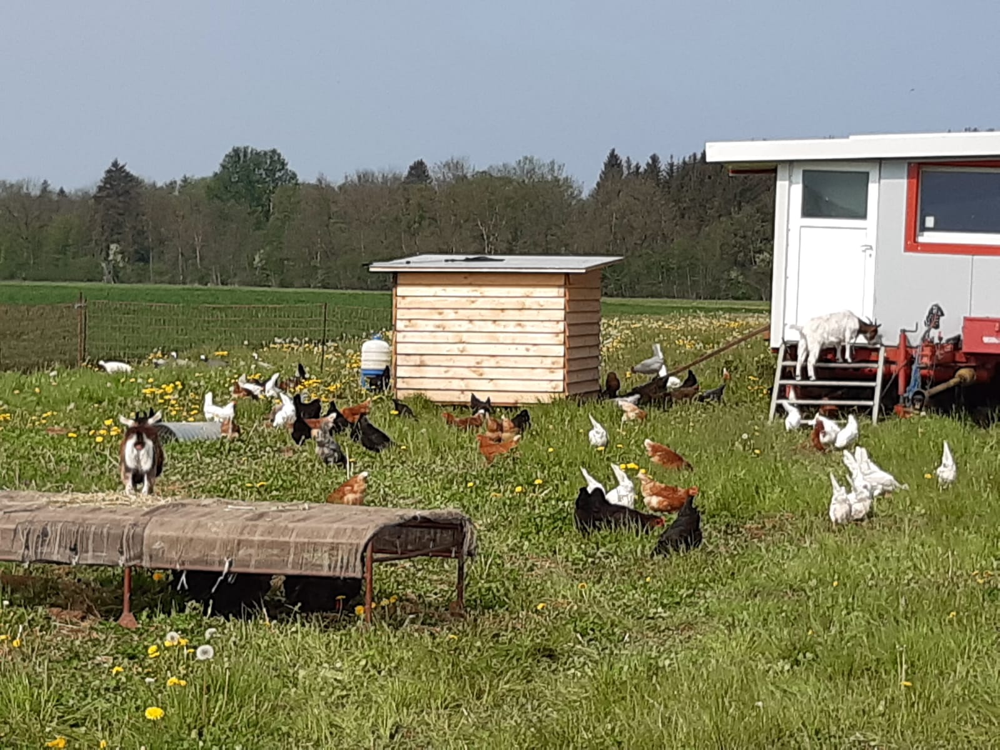

Das machen wir
Seit wir unser erstes Kartoffelhaisle, während der Corona Pandemie, in
Nordhausen aufgebaut haben, ist viel passiert.
Wir – die Familie Wenninger – sind seitdem mit
viel Herzblut und Liebe dabei.
Am 20.02.2021 eröffneten wir das zweite Kartoffelhaisle an unserem Hauptstandort in Unterpeiching.
Ein Jahr später, am 14.05.2022, kam der dritte Standort in Staudheim hinzu.
Unser Hof
Unser Hof wird konventionell betrieben, mit erzeugnissen wie Kartoffeln, Zuckerrüben und Getreide.
Außerdem haben wir ein Hühnermobil mit glücklichen Hühnern und drei Ziegen.
Bewirtschaftet wird er von Otto und Evi Wenninger mit ihren 3 Kindern.

👉 Unser Hühnermobil mit unseren Hühnern und Ziegen
Kartoffelhaisle Nordhausen
Diesen Standort betreiben wir gemeinsam mit den Familien Humpf und Schmid